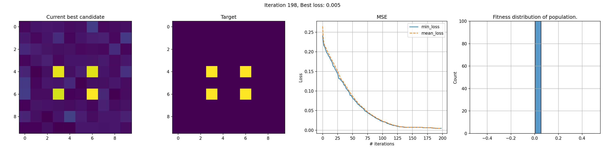
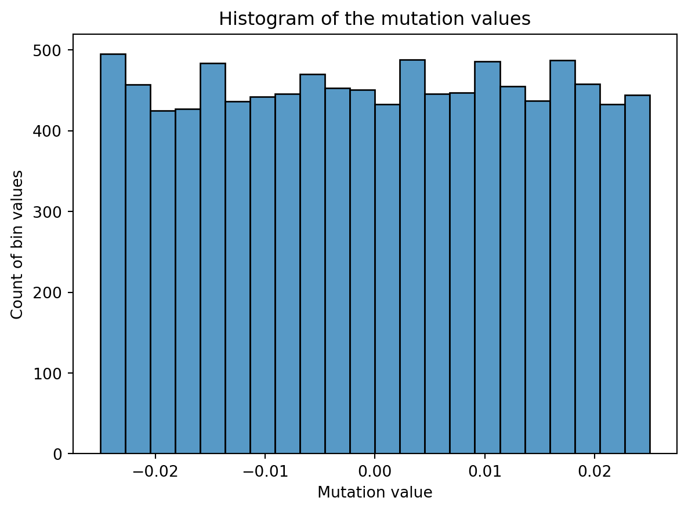

Code
Result of crossover: [0, 0, 1, 1]Bauke Brenninkmeijer
February 16, 2023

Genetic algorithms are a beautiful subset in the machine learning domain, that use evolutionairy techniques to arrive to solutions that other algorithms have trouble at. These techniques include the combining of solutions, often called crossover, and the slightly altering of solutions, called mutations.
In this post, I’ll show two versions genetic algorithms that can be used for image reconstruction given a target image. In the real world, it will have few applications but it’s a great theoretical exercise and practice for understanding of the algorithms and image manipulation. However, they are unmistakingly usefull and have been applied in many domains, one being Neural Architecture Search, a method to find the best architecture for a neural network given a specific problem.
While other optimization methods, such a gradient descent are incredibly powerful for problems that provide a smooth non-stochastic optimization curve. However, for problems that might have many different good solutions that are not easily findable following a single trajectory in parameter space, genetic algorithms can provide unexpected solutions.
As in nature, genetic algorithms are based on natural selection and survival of the fittest. That means that each iteration, we select the best candidates for the problem at hand and continue with those. Each individual represents a solutions, and by slightly altering and combining solutions we hope to come to a better solution each iteration. As you can understand, this is a very generic approach that can be applied to all types of problems.
Generally, the algorithms for genetic algorithms follows roughly the same outline and is as follows:
pop = create initial popluation with n individuals
for i in n_iterations:
1. randomly combine/reproduce individuals
2. randomly mutate individuals
3. retain fittest individualsLet’s start with the most simple version of changes made to candidates: mutations. In any organism with DNA (or some form of it), we see mutations; slight changes in the genetic code. In organism, it’s typically the results of an incorrect copy of DNA code, but in this case we are intentionally applying mutation to create slight variations.
For human cells, a mutated cell can start to misbehave, which is generally cleaned up by our immune system. However, sometimes they’re missed or not easy to clean up and can lead to serious consequences such as cancer. We also know mutations from sci-fi and monster stories, which result in zombies and the like, but that’s unfortunately not what we are talking about today.
Procreation is very important for this algorithm, because it allows the combining of two (or more) individuals into a new individual. Hopefully, this leads to to an individual that has all good qualities of their parents and none of the bad. In the rest of this post, the terms procreation, crossover and combine are used interchangeably for this concept.
An example with two individuals and their crossover. In this example, and individual is defined by its genes: 4 binary digits. The crossover in this case is just taking the first two digits of the first individual and the latter two of the second individual.
To assess which individuals are the most fit, you need some metric. Depending on the problem, naturally you can use many different versions. In our case, image reconstruction, we are going to use the mean-squared error of the pixel values \(l = \frac{1}{n} \sum_{i=1}^{n}(c_i - T)^2\) where \(n\) is the size of the population, \(c_i\) is candidate \(i\) and \(T\) the target image. This works nicely with our data and as always, penalizes the largest errors the most.
In this method, we try to recreate the target image by manipulating individual pixels and comibing whole pixel arrays. The genes of an individual is a pixel array the size of the target image. For some RGB image, this will be a three dimensional, for exmaple (200, 200, 3).
Let’s first deine a pixel individual and set its genes to the shape that we want. We also give an option to pass genes, which is handy for the crossover step later. Lastly, we define that probability to mutate mutate_p and the delta of a mutation mutate_d. The main methods of the individual are already defined here as well.
class PixelIndividual:
"""Individual with pixel grid for genes."""
def __init__(
self,
shape: Tuple,
genes: np.ndarray | None = None,
mutate_d: float = 0.05,
mutate_p: float = 0.2
):
self.shape = shape
self.mutate_d = mutate_d
self.mutate_p = mutate_p
if genes is None:
self.genes = (np.random.rand(*shape)).astype(np.float32)
else:
self.genes = genes
def crossover(self, other) -> PixelIndividual:
filter_arr = np.random.randint(low=0, high=2, size=self.genes.shape)
output = np.where(filter_arr, self.genes, other.genes)
return PixelIndividual(shape=self.shape, genes=output)
def mutate(self):
if self.mutate_p > np.random.rand():
self.mutation = ((np.random.rand(*self.shape) * self.mutate_d) - (self.mutate_d * 0.5)).astype(np.float32)
self.genes = np.clip(self.genes + self.mutation, a_min=0.0, a_max=1.0)
def compute_fitness(self, target):
assert self.genes.dtype.name == 'float32', f'genes dtype should be float32 but found {self.genes.dtype.name}.'
self.fitness = ((self.genes - target) ** 2).mean()The second method is our choice of what happens during crossover. How to implement a crossover function is really up to the person working on the problem. Initially I just took the pixelwise mean of both parents, but that seemed to always kind of move towards hovering around 0.5, which is maybe logical, but definitely undesirable. In this version, I chose to randomly take each pixel from either parent. This seems to work fairly well but you can use many other versions so make sure to play around with this a bit yourself.
Then, onto the mutation part, which is fairly simple. We just create some noise of a certain magnitude, shift it so half of it is negative and add it to the existing pixel values of said candidate. In the plot below you can see the distribution of a mutation for an individual with 100x100 grid as genes. I have chosen a uniform distribution for this, but again, you can choose others such as normal. However, the domain of the uniform distribution is simple and intuitive. For example, scaling an uniform distribution with 0.2 will have a magnitude of 0.2 as well. ranging from 0 to 0.2 distributed evenly. So you can see why working with this distribution is nice.
As a last step, we apply the mutation and clip the values to the range [0, 1]. This is because otherwise we can mutate outside of the colour boundaries of an image, which will be clipped when shown as an image anyway. The domain for pixel values with a float is [0, 1] or [0, 255] for integer values, and plotting libraries like matplotlib will clip values for you if you don’t. To prevent hidden problems, we already make sure the domains and datatypes are correct.
Because I encountered a lot of datatype issues, such as float64 and integer reprentations, I cast most computation to float32 and also do a dtype check in the compute_fitness method.

---
author: Bauke Brenninkmeijer
badges: true
branch: master
categories:
- Genetic Algorithms
- Machine learning
date: '2023-02-16'
image: images/genetic-algorithms/banner.png
title: Genetic Algorithms for image reconstruction 🧬
description: How we can leverage genetic algorithms to help with image reconstruction.
toc: true
format:
html:
code-fold: show
code-tools: true
# highlight-style: github
code-line-numbers: true
code-overflow: wrap
code-block-border-left: true
---
## Introduction
{#fig-4dots-training}
Genetic algorithms are a beautiful subset in the machine learning domain, that use evolutionairy techniques to arrive to solutions that other algorithms have trouble at. These techniques include the combining of solutions, often called crossover, and the slightly altering of solutions, called mutations.
In this post, I'll show two versions genetic algorithms that can be used for image reconstruction given a target image. In the real world, it will have few applications but it's a great theoretical exercise and practice for understanding of the algorithms and image manipulation. However, they are unmistakingly usefull and have been applied in many domains, one being Neural Architecture Search, a method to find the best architecture for a neural network given a specific problem.
While other optimization methods, such a gradient descent are incredibly powerful for problems that provide a smooth non-stochastic optimization curve. However, for problems that might have many different good solutions that are not easily findable following a single trajectory in parameter space, genetic algorithms can provide unexpected solutions.
As in nature, genetic algorithms are based on natural selection and survival of the fittest. That means that each iteration, we select the best candidates for the problem at hand and continue with those. Each individual represents a solutions, and by slightly altering and combining solutions we hope to come to a better solution each iteration. As you can understand, this is a very generic approach that can be applied to all types of problems.
### The algorithm
Generally, the algorithms for genetic algorithms follows roughly the same outline and is as follows:
```
pop = create initial popluation with n individuals
for i in n_iterations:
1. randomly combine/reproduce individuals
2. randomly mutate individuals
3. retain fittest individuals
```
## Mutations
Let's start with the most simple version of changes made to candidates: mutations. In any organism with DNA (or some form of it), we see mutations; slight changes in the genetic code. In organism, it's typically the results of an incorrect copy of DNA code, but in this case we are intentionally applying mutation to create slight variations.
For human cells, a mutated cell can start to misbehave, which is generally cleaned up by our immune system. However, sometimes they're missed or not easy to clean up and can lead to serious consequences such as cancer. We also know mutations from sci-fi and monster stories, which result in zombies and the like, but that's unfortunately not what we are talking about today.
## Procreation
Procreation is very important for this algorithm, because it allows the combining of two (or more) individuals into a new individual. Hopefully, this leads to to an individual that has all good qualities of their parents and none of the bad. In the rest of this post, the terms procreation, crossover and combine are used interchangeably for this concept.
An example with two individuals and their crossover. In this example, and individual is defined by its genes: 4 binary digits. The crossover in this case is just taking the first two digits of the first individual and the latter two of the second individual.
```{python}
ind1 = [0, 0, 0, 0]
ind2 = [1, 1, 1, 1]
def crossover(a, b):
return a[:2] + b[2:]
print(f'Result of crossover: {crossover(ind1, ind2)}')
```
## Fitness function
To assess which individuals are the most fit, you need some metric. Depending on the problem, naturally you can use many different versions. In our case, image reconstruction, we are going to use the mean-squared error of the pixel values $l = \frac{1}{n} \sum_{i=1}^{n}(c_i - T)^2$ where $n$ is the size of the population, $c_i$ is candidate $i$ and $T$ the target image. This works nicely with our data and as always, penalizes the largest errors the most.
## Pixelwise
In this method, we try to recreate the target image by manipulating individual pixels and comibing whole pixel arrays. The genes of an individual is a pixel array the size of the target image. For some RGB image, this will be a three dimensional, for exmaple (200, 200, 3).
Let's first deine a pixel individual and set its genes to the shape that we want. We also give an option to pass genes, which is handy for the crossover step later. Lastly, we define that probability to mutate `mutate_p` and the delta of a mutation `mutate_d`. The main methods of the individual are already defined here as well.
```{python}
#| echo: false
from __future__ import annotations
import numpy as np
from typing import Tuple
import matplotlib.pyplot as plt
```
```{python}
#| column: page
class PixelIndividual:
"""Individual with pixel grid for genes."""
def __init__(
self,
shape: Tuple,
genes: np.ndarray | None = None,
mutate_d: float = 0.05,
mutate_p: float = 0.2
):
self.shape = shape
self.mutate_d = mutate_d
self.mutate_p = mutate_p
if genes is None:
self.genes = (np.random.rand(*shape)).astype(np.float32)
else:
self.genes = genes
def crossover(self, other) -> PixelIndividual:
filter_arr = np.random.randint(low=0, high=2, size=self.genes.shape)
output = np.where(filter_arr, self.genes, other.genes)
return PixelIndividual(shape=self.shape, genes=output)
def mutate(self):
if self.mutate_p > np.random.rand():
self.mutation = ((np.random.rand(*self.shape) * self.mutate_d) - (self.mutate_d * 0.5)).astype(np.float32)
self.genes = np.clip(self.genes + self.mutation, a_min=0.0, a_max=1.0)
def compute_fitness(self, target):
assert self.genes.dtype.name == 'float32', f'genes dtype should be float32 but found {self.genes.dtype.name}.'
self.fitness = ((self.genes - target) ** 2).mean()
```
The second method is our choice of what happens during crossover. How to implement a crossover function is really up to the person working on the problem. Initially I just took the pixelwise mean of both parents, but that seemed to always kind of move towards hovering around 0.5, which is maybe logical, but definitely undesirable. In this version, I chose to randomly take each pixel from either parent. This seems to work fairly well but you can use many other versions so make sure to play around with this a bit yourself.
### Mutation
Then, onto the mutation part, which is fairly simple. We just create some noise of a certain magnitude, shift it so half of it is negative and add it to the existing pixel values of said candidate. In the plot below you can see the distribution of a mutation for an individual with 100x100 grid as genes. I have chosen a uniform distribution for this, but again, you can choose others such as normal. However, the domain of the uniform distribution is simple and intuitive. For example, scaling an uniform distribution with 0.2 will have a magnitude of 0.2 as well. ranging from 0 to 0.2 distributed evenly. So you can see why working with this distribution is nice.
As a last step, we apply the mutation and clip the values to the range [0, 1]. This is because otherwise we can mutate outside of the colour boundaries of an image, which will be clipped when shown as an image anyway. The domain for pixel values with a float is [0, 1] or [0, 255] for integer values, and plotting libraries like matplotlib will clip values for you if you don't. To prevent hidden problems, we already make sure the domains and datatypes are correct.
Because I encountered a lot of datatype issues, such as float64 and integer reprentations, I cast most computation to float32 and also do a dtype check in the `compute_fitness` method.
```{python}
#| echo: false
import seaborn as sns
ind = PixelIndividual(shape=(100, 100), mutate_p=1)
ind.mutate()
sns.histplot(ind.mutation.reshape(-1))
plt.title('Histogram of the mutation values')
plt.ylabel('Count of bin values')
plt.xlabel('Mutation value')
plt.show()
```